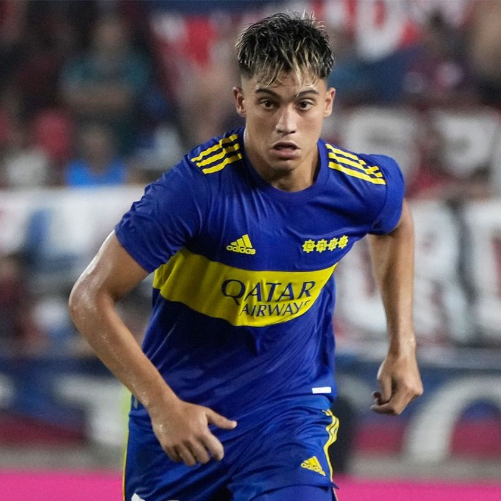

Volver al Inicio <-
Exequiel ZeballosExequiel Zeballos (La Banda, Santiago del Estero, Argentina; 24 de abril de 2002), es un futbolista argentino que se desempeña como extremo y su equipo actual es el Club Atlético Boca Juniors de la Liga Profesional Argentina. |
 |
Dio sus primeros pasos en el Club Atlético Sarmiento de La Banda, en su Santiago del Estero natal. A la edad de 11 años, Diego Mazzilli, captador y formador de Boca Juniors lo observó en el Torneo Sueño Celeste, realizado en Rafaela, Provincia de Santa Fe y se interesó en el siguiendo sus pasos y citándolo a un Selectivo en Casa Amarilla. Vivió en su ciudad natal hasta 2015. Finalmente, en el año 2016 pasó a formar parte de la pensión del club porteño y a estar oficialmente en sus inferiores.
Firmó en 2018 su primer contrato como profesional en el club, cuyo vínculo finaliza en junio de 2022. A comienzos de 2020 fue citado a la pretemporada a realizarse con el primer equipo. Fue confirmado en la nómina para concentrar con el primer equipo por primera vez, el día 21 de octubre de 2020, para disputar el último partido correspondiente al grupo H de la Copa Libertadores 2020, recibiendo a Caracas Futbol Club al día siguiente.
El día 29 de noviembre de 2020, Zeballos, realizó su debut profesional ante Newells Old Boys.
Convirtió su primer gol en Boca Juniors en la última fecha del torneo de la Liga Profesional Argentina frente a Central Córdoba, ejecutando desde el punto de penal, picando el balón frente al arquero. Además, convirtió un gol al FC Barcelona en un encuentro amistoso realizado en Arabia Saudita en homenaje a Diego Maradona.
Durante el torneo amistoso de verano del año 2022, le marcaría un gol tanto a Colo-Colo, como a la U de Chile, reafirmando así, su prometedor futuro. A principios de marzo, también volvió a convertir, esta vez por los 32avos de la Copa Argentina 2022, frente a Central Córdoba. El 15 de junio de ese mismo año, Zeballos, marcaría su primer doblete con Boca, frente a Tigre por el Campeonato de Primera División. Cuatro días después marcaria otro tanto frente a Barracas Central. A fines de ese mes, también, fue titular en los octavos de final de la Copa Libertadores 2022 frente a S.C. Corinthians, y se destacó en sus actuaciones tanto en la ida como en la vuelta, recibiendo elogios de futbolistas como el Kun Agüero